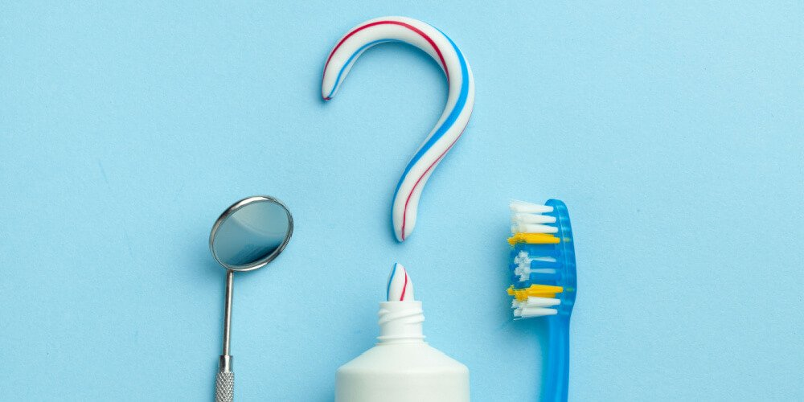

ImpulsoDental
ImpulsoDental
Schedule: Monday to Sunday by appointment
Trinidad Moran, Lince
Contact us: +51 955163208
Frequently Asked Questions
The American Academy of Pediatric Dentistry (AAPD) recommends that children first see a dentist as early as six months of age and no later than one year of age. During this time, your child’s baby teeth will be coming in and your dentist can examine the health of your child’s first few teeth. After the first visit, be sure to schedule regular checkups every six months.
Your teeth may feel fine, but it’s still important to see the dentist regularly because problems can exist without you knowing. Your smile’s appearance is important, and your dentist can help keep your smile healthy and looking beautiful. With so many advances in dentistry, you no longer have to settle for stained, chipped, missing, or misshapen teeth. Today’s dentists offer many treatment choices that can help you smile with confidence, including:
- Professional teeth whitening
- Fillings that mimic the appearance of natural teeth
- Tooth replacement and full smile makeovers
- Always remember to brush your teeth at least two times a day, and floss at least once!
- Make sure to use toothpaste that contains fluoride, and ask your dentist if you need a fluoride rinse. This will help prevent cavities.
- Avoid foods with a lot of sugar (sugar increases the amount of bacteria that grows in your mouth causing more plaque and possibly cavities) and avoid tobacco (this can stain your teeth, cause gum disease, and eventually lead to oral cancer).
- Don’t be afraid to brush your tongue! By brushing your tongue, you will remove food particles and reduce the amount of plaque-causing bacteria. Tongue brushing also helps keep your breath fresh.
- Be sure to schedule your routine checkup. It is recommended that you visit the dentist every six months.
Simply call our practice! Our front desk staff will be happy to help schedule your next dental checkup at your convenience. If you are a new patient, please let us know and we will provide you with all the information you need for your first dental visit.
Your toothbrush will eventually wear out, especially if you are brushing your teeth twice a day for two to three minutes each time. Your dentist recommends that adults and children change their toothbrush every three months. If you are using an electric toothbrush, be sure to read the directions because you may not need to change toothbrush heads as frequently. Patients with gum disease are encouraged to change their toothbrush every four to six weeks to keep any bacteria from spreading. After brushing, rinse your toothbrush with hot water to kill germs and keep the bristles clean. If you’ve been sick, be sure to change your toothbrush as soon as possible.
According to your dentist and the American Dental Association, you should brush your teeth at least two times a day. Brushing keeps your teeth, gums, and mouth clean and healthy by removing bacteria-causing plaque. It is also recommended that you use a soft-bristled toothbrush and toothpaste that contains fluoride when you brush your teeth. You should spend at least a minute on the top teeth and a minute on the bottom teeth, and remember to brush your tongue; it will help keep your breath smelling fresh!
Also known as periodontal disease, gum disease is mostly caused by plaque and bacteria buildup that is not treated in its early stage. Other causes of periodontal disease include tobacco use, teeth grinding, some medications, and genetics. Gingivitis is the beginning stage of gum disease, and, if detected, is treatable. Gingivitis left untreated may turn into gum disease. Advanced gum disease will lead to tooth and bone loss, and is a permanent condition. Brushing your teeth regularly and visiting the dentist every six months will help prevent gingivitis and more severe cases of periodontal disease.
